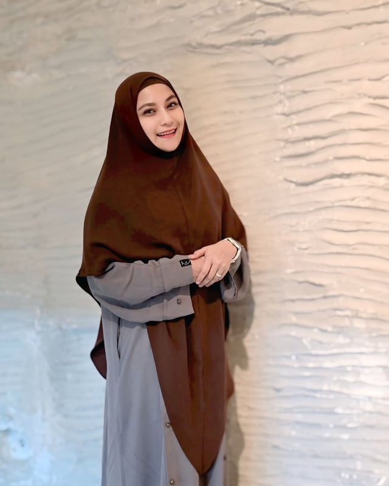

Visi
Menjadi rumah tumbuh bagi setiap anak berkebutuhan khusus di Indonesia — agar setiap anak mampu menyampaikan dirinya, dan setiap keluarga merasa tidak berjalan sendirian.
Sensoria lahir dari pengalaman panjang mendampingi anak berkebutuhan khusus — bukan dari selembar rencana bisnis. Aplikasi ini dinaungi yayasan pendidikan yang telah tumbuh bersama keluarga-keluarga di Indonesia.
Sejak 2014, kami mendampingi anak-anak berkebutuhan khusus melalui sekolah khusus setingkat TK dan SD yang tumbuh di Medan, Palembang, Batam, dan Jakarta. Dari ruang-ruang kelas itulah kami melihat pola yang berulang: anak memiliki banyak hal untuk disampaikan, tetapi belum selalu punya sarana untuk menyampaikannya.
Pengalaman itu menumbuhkan keyakinan sederhana: komunikasi adalah hak setiap anak, dan teknologi seharusnya memperluas jangkauan pendampingan, bukan menggantikannya. Sensoria AAC adalah wujud keyakinan tersebut — kartu gambar, kalimat, dan suara yang bisa dibawa ke mana pun keluarga berada.
Setiap fitur dirancang bersama praktisi yang setiap hari bekerja bersama anak — guru, terapis, dan yang terpenting: keluarga.
Sebelum seorang anak bisa bicara, ia perlu didengar.— cara kerja Yayasan Mendengar Bicara
Sederhana di ucapan, konsisten di kerja — menjadi pijakan setiap program dan fitur.
Menjadi rumah tumbuh bagi setiap anak berkebutuhan khusus di Indonesia — agar setiap anak mampu menyampaikan dirinya, dan setiap keluarga merasa tidak berjalan sendirian.

Seftiana Sari, S.Ked., M.Psi.
Ketua Yayasan Mendengar Bicara · Pengarah Program Sensoria AAC
Profesional di bidang pendidikan anak berkebutuhan khusus sejak 2014, ibu dari anak berkebutuhan khusus, praktisi Auditory-Verbal Therapy (AVT), terapis perilaku (ABA), dan counselor. Latar belakang kedokteran dan psikologi membentuk cara pandangnya: mendampingi anak sekaligus memperkuat keluarganya.
Di balik Sensoria, Ibu Seftiana memimpin arah program — memastikan setiap kartu, kata, dan fitur aplikasi selaras dengan praktik pendampingan yang nyata di ruang kelas dan ruang terapi.
Pengabdian yang tumbuh menjadi jaringan lembaga pendidikan khusus dan sekolah di beberapa kota besar.
 Slot foto
Slot foto
 Slot foto
Slot foto
 Slot foto
Slot foto
 Slot foto
Slot foto
 Slot foto
Slot foto
 Slot foto
Slot foto
Empat pijakan yang menjaga setiap program — dan setiap piksel di Sensoria.
Kenali lebih dekat aplikasi yang lahir dari perjalanan yayasan ini, atau hubungi kami untuk kolaborasi dan kunjungan ke lembaga.